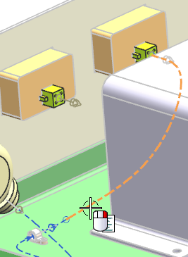
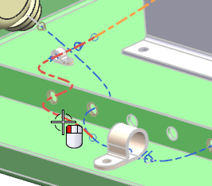
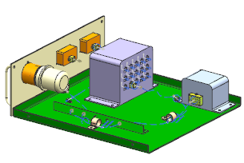

Right-click the segment and choose Simplify Path.

On the Selection bar, click the Method list and select Standard.
Select the adjoining segment.

点击确定。
The RCP is removed from the path.
Make the top level of the assembly the work part.

Close all parts without saving.